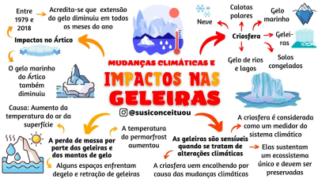
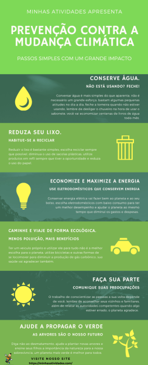

O que é Mudanças Climáticas?
A mudança climática refere-se a alterações significativas e persistentes nos padrões climáticos globais ao longo do tempo. Essas mudanças podem incluir um aumento na temperatura média da Terra, alterações nos padrões de chuva, elevação do nível do mar, derretimento de geleiras e icebergs, e ocorrência de fenômenos climáticos extremos, como tempestades mais intensas, secas prolongadas e ondas de calor mais frequentes. Embora variações climáticas naturais tenham ocorrido ao longo da história da Terra, a preocupação atual está centrada nas mudanças climáticas causadas pela atividade humana, em particular pela emissão de gases de efeito estufa na atmosfera, como dióxido de carbono (CO2), metano (CH4) e óxidos de nitrogênio (NOx). Esses gases retêm o calor na atmosfera, levando ao aumento do efeito estufa e contribuindo para o aquecimento global. As consequências da mudança climática podem ser extremamente prejudiciais para os ecossistemas naturais, a biodiversidade, a agricultura e as comunidades humanas em todo o mundo. Por essa razão, é um dos problemas mais urgentes e amplamente debatidos da nossa era, com esforços globais em andamento para mitigar seus impactos e se adaptar às suas consequências.
Principais Contribuintes para a mudança climática atualmente
Emissões de gases de efeito estufa: Atividades humanas, como queima de combustíveis fósseis (carvão, petróleo, gás natural), desmatamento, agricultura intensiva e processos industriais, liberam gases como dióxido de carbono (CO2), metano (CH4) e óxidos de nitrogênio (NOx) na atmosfera. Esses gases retêm o calor do sol na Terra, causando o aquecimento global.
Desmatamento: O desmatamento, principalmente em florestas tropicais, contribui para a liberação de grandes quantidades de CO2 na atmosfera, já que as árvores, quando cortadas ou queimadas, liberam o carbono armazenado em sua biomassa.
Uso de energia: A queima de combustíveis fósseis para gerar energia é uma das principais fontes de emissões de CO2. Além disso, o uso intensivo de energia em indústrias, transporte e residências também contribui para as emissões.
Agricultura e pecuária: A agricultura intensiva, especialmente a produção de arroz, o uso de fertilizantes nitrogenados e a criação de gado, liberam gases como metano e óxido nitroso, contribuindo para o efeito estufa.
Mudança no uso da terra: A conversão de áreas naturais, como florestas e pântanos, em terras agrícolas ou urbanas, pode aumentar as emissões de CO2 e reduzir a capacidade da terra de absorver carbono.
Mapa Mental: Resumo sobre Aquecimento Global
Mapa Mental: Mudanças Climáticas e o Impacto nas Geleiras
